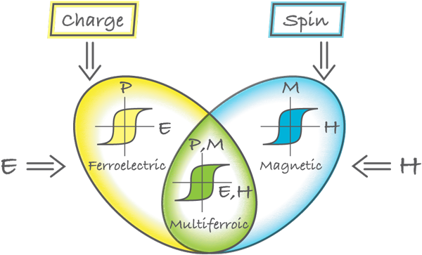
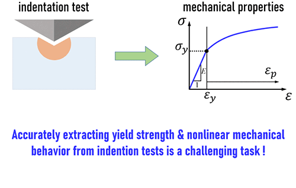
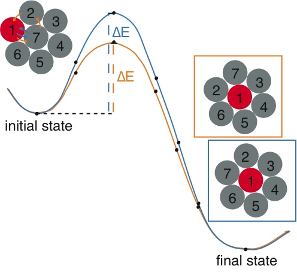
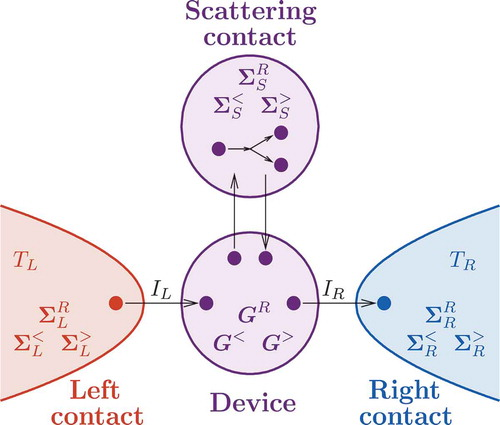
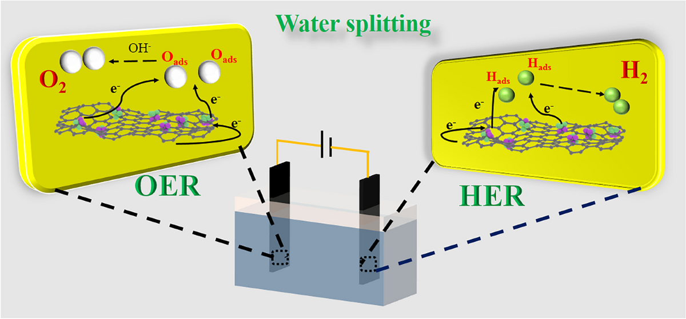

Research
Eight threads run through my work, from correlated oxides and magnetocalorics to phonon transport in nanoscale devices.

Multiferroic Magnetoelectric Oxides
My research on multiferroic magnetoelectric oxides explores materials that simultaneously exhibit ferroelectric and magnetic properties, enabling unique coupling between electric and magnetic orders. By leveraging first-principles modeling and computational techniques like density functional theory, I investigate the structural, electronic, and magnetic characteristics of these oxides to uncover mechanisms driving giant magnetoelectric effects. My work focuses on designing novel multiferroic materials with enhanced coupling for applications in energy-efficient technologies, such as non-volatile memory, spintronics, and sensors, contributing to the advancement of sustainable, next-generation devices.

Mechanical Properties of 2D Materials
My research focuses on investigating the mechanical properties of two-dimensional (2D) materials through advanced computational simulations. By employing molecular dynamics-based nanoindentation simulations and density functional theory (DFT)-based pull-out simulations, I explore the structural and mechanical behavior of 2D materials under various loading conditions. This work aims to uncover fundamental insights into their strength, flexibility, and deformation mechanisms, paving the way for the design of robust nanomaterials for applications in flexible electronics, nanotechnology, and energy-efficient devices.

Chemical Stability and Ion Transport in Materials
My research employs nudged elastic band (NEB) calculations to investigate the interactions of gas molecules with layered materials and surfaces, as well as the energy barriers for ion movement within crystalline structures. By leveraging these computational techniques, I explore the adsorption, diffusion, and reaction mechanisms of gases on 2D materials and the dynamics of ion transport in solid-state systems. This work aims to provide critical insights into designing advanced materials for gas sensing, catalysis, and energy storage applications, contributing to the development of efficient and sustainable technologies.

Magnetocaloric Materials
My research on magnetocaloric materials focuses on simulating their thermomagnetic properties using spin-lattice dynamics driven by magnetic exchange energies calculated via density functional theory (DFT). By integrating these computational approaches, I investigate the magnetocaloric effect, which enables efficient magnetic refrigeration and thermal management. This work aims to uncover the microscopic mechanisms governing entropy changes under magnetic fields, facilitating the design of advanced materials for sustainable cooling technologies and energy-efficient systems.

Thermal Transport in Nanoscale Devices
My research on thermal transport in nanoscale devices employs the Non-Equilibrium Green's Function (NEGF) method to model phonon-mediated heat conduction in nanostructured systems. By integrating harmonic and anharmonic interactions, I investigate phonon transmission, scattering, and interfacial thermal conductance in devices such as superlattices and heterostructures. This work aims to elucidate the mechanisms governing thermal transport at the nanoscale, enabling the design of advanced materials for efficient thermal management in microelectronics and energy conversion technologies.

Materials for Catalytic Applications
My research on materials for catalytic applications focuses on designing and optimizing catalysts for photocatalysis, hydrogen evolution reaction (HER), and oxygen evolution reaction (OER). Using computational methods such as density functional theory, I investigate the electronic structure, surface reactivity, and stability of nanostructured materials to enhance their catalytic performance. This work aims to develop efficient, sustainable catalysts for renewable energy applications, including solar-driven water splitting and green hydrogen production, contributing to the advancement of clean energy technologies.
Other Functional Materials
My research on other functional materials encompasses a diverse range of advanced systems, including thermoelectric, photovoltaic, smart adhesives, and battery materials. Using computational approaches like density functional theory and molecular dynamics, I explore the electronic, thermal, and mechanical properties of these materials to optimize their performance for energy conversion, storage, and responsive applications. This work aims to develop innovative solutions for efficient thermoelectric power generation, high-performance solar cells, adaptive adhesive technologies, and next-generation battery systems, contributing to sustainable energy and smart material advancements.